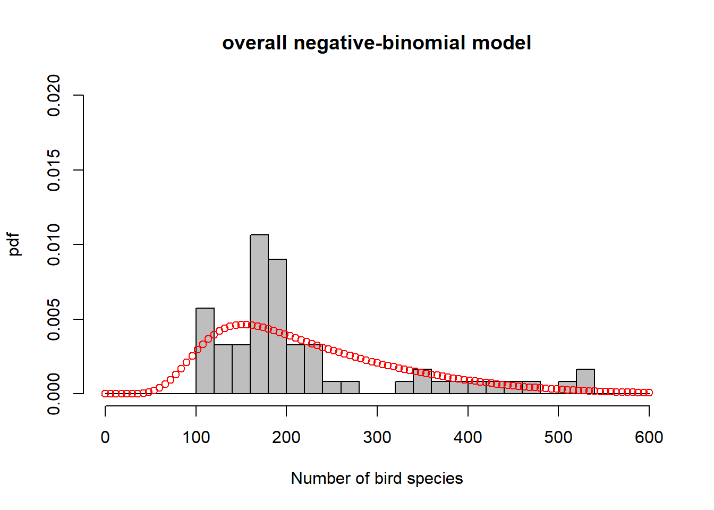
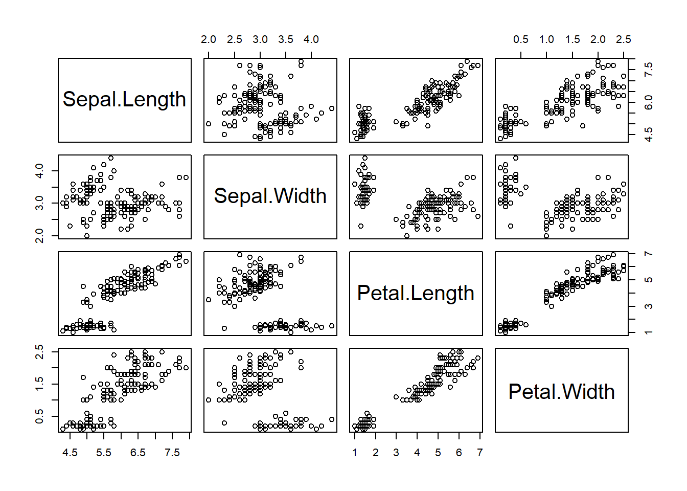
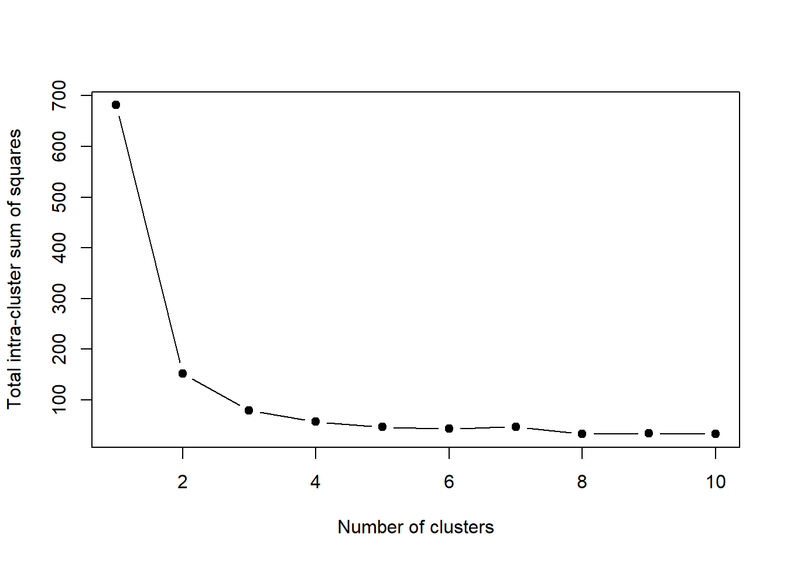
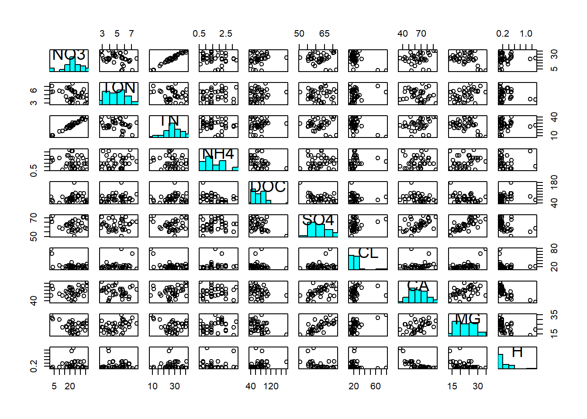

Chapter 8 Multivariate methods
Multivariate regression extends the case of multiple regression (one response variable/ multiple predictor variables) to the case of multiple response variables/ multiple predictor variables – predictors are continuous variables (though there is the same correspondence as between linear regression and ANOVA).
Multivariate analysis of variance (MANOVA) (Chapter 8.3) extends the case of ANOVA (one response variable/ multiple predictor variables) to the case of multiple response variables/ multiple predictor variables – predictors are categorical variables (though MANOVA relates to multivariate regression just like ANOVA does to linear regression).
Discriminant Function Analysis (DFA) (Chapter 8.4) is a classification method that tests how well multi-response observations discriminate between pre-determined groups, and can also be used to classify new observations into one of the groups.
Principle Component Analysis (PCA) (Chapter 8.2), Factor Analysis (FA) and related methods aim at finding structure in a multivariate dataset, not deciding on response/predictor variables just yet. While PCA is trying to extract a reduced set of components that explain much of the variability in the original variables, FA is trying to explain correlations among the original variables (but both are related). PCA and FA are typically employed to pre-structure and simplify a problem by reducing its data dimensions, e.g. to reduce collinearity (compare Chapter 5).
Cluster Analysis (Chapter 8.1) looks for groups (clusters) in a multivariate dataset. Objects (data points) belonging to the same group “resemble” each other (we will see what this means). Objects belonging to different groups are “dissimilar”.
8.1 Cluster analysis
This section is based on material by Cornelius Senf.23 Cluster analysis looks for groups (clusters) in a multivariate dataset. Objects (data points) belonging to the same group “resemble” each other (we will see what this means). Objects belonging to different groups are “dissimilar”. There are three groups of methods:
- Partitioning the dataset into a number of clusters specified by the user, e.g. the kmeans algorithm
- Hierarchical, starting with each object (data point) as a separate cluster and then aggregating these step by step, ending up with a single cluster
- Divisive, starting with a single cluster of all objects (data points) and then splitting this up step by step until all objects are in different clusters
Let’s illustrate the principles of these methods with the Iris dataset that is available from R, on which cluster analysis can be used to separate taxonomic groups. The dataset consists of a sample of Iris flowers for which the lengths and widths of their sepals and petals were measured. Sepals and petals are two different kinds of leaves in the flower. The question is: Can we separate clusters of flowers that are sufficiently different with respect to these four features? This then could form the basis of deriving taxonomic groups; indeed this is a typical approach in botany. To get a sense of the dataset let’s first plot a scatterplot matrix:

We can already see at least two clusters. In some dimensions (petal length and width) they are more apart than in others (sepal length and width). Let’s formalise this analysis using the kmeans algorithm and afterwards look briefly what hierarchical methods do.
8.1.1 The kmeans algorithm
The purpose of kmeans is to build clusters such that the distance of cluster objects (data points) to cluster centroids (vectors of means) is minimised. The algorithm proceeds though the following steps:
- Choose \(k\) random cluster centroids in the multivariate space
- Allocate each object to a cluster so that total intra-cluster sum of squares (Equation (8.1)) is minimised
\[\begin{equation} \sum_{j=1}^{k}\sum_{i=1}^{n_j}\lVert \mathbf{y}_{ij}-\boldsymbol{\mu}_j\rVert^2 \tag{8.1} \end{equation}\]
\(\boldsymbol{\mu}_j\) is the centroid of cluster \(j=1,2,\ldots,k\), i.e. the vector of means across the data dimensions (here four). \(\mathbf{y}_{ij}\) is data point \(i=1,2,\ldots,n_j\) of cluster \(j\), i.e. a multivariate vector too. \(\lVert\cdot\rVert\) symbolises the Euclidean distance.
- Re-calculate cluster centroids
- Repeat steps 2-3 until cluster centroids are not changing much anymore (by some chosen criterion)
Often the Euclidean distance is used as a measure of (dis)similarity but others can be specified as well.
We have to tell the algorithm how many clusters we want. Let’s use two to begin with (because that was our intuition earlier):
# run kmeans algorithm on Iris data asking for 2 clusters
iris_fit2 <- kmeans(iris[,1:4], centers=2)
# scatterplot matrix
plot(iris[,1:4], col=iris_fit2$cluster)
Two clusters didn’t seem enough to reproduce the separation we see visually. Let’s increase the number of clusters to three:
# run kmeans algorithm on Iris data asking for 3 clusters
iris_fit3 <- kmeans(iris[,1:4], centers=3)
# scatterplot matrix
plot(iris[,1:4], col=iris_fit3$cluster)
I think we would be happy with this visually. But are there perhaps even more clusters? When to stop? A useful stopping criterion is to look at the inflexion point where the total intra-cluster sum of squares (Equation (8.1)) does not change much anymore with increasing \(k\):
# specify vector of clusters
clusters <- 1:10
# initialise corresponding vector of total intra-cluster sum of squares
ticss <- rep(NA, 10)
# loop through vector of clusters
for(i in clusters){
# run kmeans
iris_fit <- kmeans(iris[,1:4], centers=i)
# collect total intra-cluster sum of squares
ticss[i] <- iris_fit$tot.withinss
}
# plot total intra-cluster sum of squares against clusters
plot(clusters, ticss, pch = 19, type = 'b', xlab = "Number of clusters",
ylab = "Total intra-cluster sum of squares")
We can see that beyond three clusters the improvement in separation is minimal, so we would leave it at three. This, it turns out, matches almost perfectly the official taxonomic separation of the Iris dataset:
##
## setosa versicolor virginica
## 1 50 0 0
## 2 0 2 36
## 3 0 48 14The separation of Iris versicolor and Iris virginica, however, is not perfect.
8.1.2 Hierarchical methods
The principle of hierarchical methods is to start with each object as a separate cluster and then aggregate these step by step, ending up with a single cluster. Note, devisive methods are not covered here, but they work exactly the other way round. An example algorithm works as follows:
- Build dissimilarity matrix, i.e. a matrix of the distances of every object to every other object in the multivariate space, e.g. by Euclidean distance \(\lVert\mathbf{y}_i-\mathbf{y}_{i^*}\rVert\)
- Start with each object as a separate cluster
- Join the two most similar clusters, e.g. those that lead to minimum increase in total intra-cluster sum of squares after merging (Equation (8.1)); this is called Ward’s method
- Repeat step 3 until a single cluster is build
The result is a dendrogram, whose “height” is the distance between clusters, e.g. in Ward’s method the increase in the intra-cluster sum of squares of the clusters being merged:
# construct dissimilarity matrix for Iris data
iris_dist <- dist(iris[,1:4])
# run hierarchical clustering with Ward's method
iris_fith <- hclust(iris_dist, method="ward.D2")
# dendrogram
plot(iris_fith)
Again we can see the three clearly separate clusters, beyond which any further separation is ambiguous.
8.2 Principal Component Analysis (PCA)
To illustrate PCA I will use a dataset from (???), cited in Quinn and Keough (2002), that consists of stream chemistry measurements from 38 forested catchments in the Catskill Mountains, New York:
## catchm_name max_elev sample_elev stream_length catchm_area NO3 TON TN NH4
## 1 Santa_Cruz 1006 680 1680 23 24.2 5.6 29.9 0.8
## 2 Colgate 1216 628 3912 462 25.4 4.9 30.3 1.4
## 3 Halsey 1204 625 4032 297 29.7 4.4 33.0 0.8
## 4 Batavia_Hill 1213 663 3072 399 22.1 6.1 28.3 1.4
## 5 Windham_Ridg 1074 616 2520 207 13.1 5.7 17.6 0.6
## 6 Silver_Sprin 1113 451 3120 348 27.5 3.0 30.8 1.1
## DOC SO4 CL CA MG H
## 1 180.4 50.6 15.5 54.7 14.4 0.48
## 2 108.8 55.4 16.4 58.4 17.0 0.24
## 3 104.7 56.5 17.1 65.9 19.6 0.47
## 4 84.5 57.5 16.8 59.5 19.5 0.23
## 5 82.4 58.3 18.3 54.6 21.9 0.37
## 6 86.6 63.0 15.7 68.5 22.4 0.17The dataset first lists catchment characteristic: catchment name, maximum elevation in catchment, elevation where stream water sample was taken, stream length in catchment, catchment area. The stream chemistry variables are concentrations of: nitrate, total organic nitrogen, total nitrogen, ammonium, dissolved organic carbon, sulfate, chloride, calcium, magnesium, hydrogen.
8.2.1 From univariate normal to multivariate normal
Like univariate methods, multivariate methods, too, rely on the normality assumption; the univariate normal distribution (Figure 8.1, left) is generalised to the multivariate normal distribution (Figure 8.1, right). Taking calcium concentration in the stream chemistry dataset as the example, the univariate normal model would be \(N(\mu,\sigma)\) with mean \(\mu=65.13\) and variance \(\sigma^2=194.74\) (Figure 8.1, left). Looking at calcium and magnesium concentration together, the multivariate normal model would be \(MVN(\boldsymbol\mu,\boldsymbol\Sigma)\) with centroid (vector of means) \(\boldsymbol\mu=\begin{pmatrix}65.13&22.86\end{pmatrix}^T\) and variance-covariance matrix \(\boldsymbol\Sigma=\begin{pmatrix}194.74&27.03\\27.03&194.74\end{pmatrix}\) (Figure 8.1, right).


Figure 8.1: Left: Histogram of calcium concentration measurements from stream chemistry dataset, with fitted normal distribution. The vertical line marks the mean. Right: Scatterplot of calcium against magnesium concentration measurements, with coloured countours of fitted multivariate normal distribution. The vertical and horizontal lines are the individual means, which intersect at the centroid. Data from: (???), cited in Quinn and Keough (2002).
The variance-covariance matrix (or just covariance matrix) is a matrix of associations between variables. On its diagonal are the variances of the individual variables,24 on the off-diagonals are the covariances between two variables:
\[\begin{equation} \mathbf{C}=\begin{pmatrix} \frac{\sum_{i=1}^{n}\left(y_{i1}-\bar y_1\right)^2}{n-1} & \frac{\sum_{i=1}^{n}\left(y_{i2}-\bar y_2\right)\cdot\left(y_{i1}-\bar y_1\right)}{n-1} & \cdots & \frac{\sum_{i=1}^{n}\left(y_{ip}-\bar y_p\right)\cdot\left(y_{i1}-\bar y_1\right)}{n-1} \\ \frac{\sum_{i=1}^{n}\left(y_{i1}-\bar y_1\right)\cdot\left(y_{i2}-\bar y_2\right)}{n-1} & \frac{\sum_{i=1}^{n}\left(y_{i2}-\bar y_2\right)^2}{n-1} & \cdots & \frac{\sum_{i=1}^{n}\left(y_{ip}-\bar y_p\right)\cdot\left(y_{i2}-\bar y_2\right)}{n-1} \\ \vdots & \vdots & \ddots & \vdots \\ \frac{\sum_{i=1}^{n}\left(y_{i1}-\bar y_1\right)\cdot\left(y_{ip}-\bar y_p\right)}{n-1} & \frac{\sum_{i=1}^{n}\left(y_{i2}-\bar y_2\right)\cdot\left(y_{ip}-\bar y_p\right)}{n-1} & \cdots & \frac{\sum_{i=1}^{n}\left(y_{ip}-\bar y_p\right)^2}{n-1} \end{pmatrix} \tag{8.2} \end{equation}\]
Normalising the variance-covariance terms in Equation (8.2) by the variances of the respective variables, e.g. \(corr\left(y_1,y_2\right)=\frac{cov\left(y_1,y_2\right)}{\sqrt{\sigma_{y_1}^2\cdot\sigma_{y_2}^2}}=\frac{cov\left(y_1,y_2\right)}{\sigma_{y_1}\cdot\sigma_{y_2}}\), yields the correlation matrix:
\[\begin{equation} \mathbf{R}=\begin{pmatrix} \frac{\sum_{i=1}^{n}\left(y_{i1}-\bar y_1\right)^2}{\sqrt{\sum_{i=1}^{n}\left(y_{i1}-\bar y_1\right)^2\cdot\sum_{i=1}^{n}\left(y_{i1}-\bar y_1\right)^2}} & \frac{\sum_{i=1}^{n}\left(y_{i2}-\bar y_2\right)\cdot\left(y_{i1}-\bar y_1\right)}{\sqrt{\sum_{i=1}^{n}\left(y_{i2}-\bar y_2\right)^2\cdot\sum_{i=1}^{n}\left(y_{i1}-\bar y_1\right)^2}} & \cdots & \frac{\sum_{i=1}^{n}\left(y_{ip}-\bar y_p\right)\cdot\left(y_{i1}-\bar y_1\right)}{\sqrt{\sum_{i=1}^{n}\left(y_{ip}-\bar y_p\right)^2\cdot\sum_{i=1}^{n}\left(y_{i1}-\bar y_1\right)^2}} \\ \frac{\sum_{i=1}^{n}\left(y_{i1}-\bar y_1\right)\cdot\left(y_{i2}-\bar y_2\right)}{\sqrt{\sum_{i=1}^{n}\left(y_{i1}-\bar y_1\right)^2\cdot\sum_{i=1}^{n}\left(y_{i2}-\bar y_2\right)^2}} & \frac{\sum_{i=1}^{n}\left(y_{i2}-\bar y_2\right)^2}{\sqrt{\sum_{i=1}^{n}\left(y_{i2}-\bar y_2\right)^2\cdot\sum_{i=1}^{n}\left(y_{i2}-\bar y_2\right)^2}} & \cdots & \frac{\sum_{i=1}^{n}\left(y_{ip}-\bar y_p\right)\cdot\left(y_{i2}-\bar y_2\right)}{\sqrt{\sum_{i=1}^{n}\left(y_{ip}-\bar y_p\right)^2\cdot\sum_{i=1}^{n}\left(y_{i2}-\bar y_2\right)^2}} \\ \vdots & \vdots & \ddots & \vdots \\ \frac{\sum_{i=1}^{n}\left(y_{i1}-\bar y_1\right)\cdot\left(y_{ip}-\bar y_p\right)}{\sqrt{\sum_{i=1}^{n}\left(y_{i1}-\bar y_1\right)^2\cdot\sum_{i=1}^{n}\left(y_{ip}-\bar y_p\right)^2}} & \frac{\sum_{i=1}^{n}\left(y_{i2}-\bar y_2\right)\cdot\left(y_{ip}-\bar y_p\right)}{\sqrt{\sum_{i=1}^{n}\left(y_{i2}-\bar y_2\right)^2\cdot\sum_{i=1}^{n}\left(y_{ip}-\bar y_p\right)^2}} & \cdots & \frac{\sum_{i=1}^{n}\left(y_{ip}-\bar y_p\right)^2}{\sqrt{\sum_{i=1}^{n}\left(y_{ip}-\bar y_p\right)^2\cdot\sum_{i=1}^{n}\left(y_{ip}-\bar y_p\right)^2}} \end{pmatrix} \tag{8.2} \end{equation}\]
Let’s look at the associations between the variables in the stream chemistry dataset:

First of all we notice the non-normality DOC, Cl and H (at least; in principle this diagnosis is ambiguous). Hence we log-transform these three variables to make them adhere better to normality:
streams_log <- streams
streams_log$DOC <- log(streams$DOC)
streams_log$CL <- log(streams$CL)
streams_log$H <- log(streams$H)
pairs(streams_log[,6:15], diag.panel = panel.hist)
We then notice a positive correlation between NO3 and TN; most of the total nitrogen in streams actually comes in the form of nitrate. We notice a positive correlation between Ca and Mg; both are characteristic of alkaline waters and often appear together. We notice a positive correlation between Mg (and Ca) and SO4; magnesium (and calcium) often appear as Mg(Ca)-sulphate. And we notice a negative correlation between Ca and H; calcium is characteristic of alkaline waters, i.e. waters that have a high pH, hence a low hydrogen concentration.
These associations are reflected in the covariance matrix:
## NO3 TON TN NH4 DOC SO4
## NO3 74.1885064 -4.367083926 68.5690754 -1.21607397 0.26399923 -1.8439972
## TON -4.3670839 1.636706970 -2.5259104 0.14816501 0.07963509 0.3585633
## TN 68.5690754 -2.525910384 65.6039900 -0.97096728 0.30096702 0.9395590
## NH4 -1.2160740 0.148165007 -0.9709673 0.53607397 -0.09426689 0.3710242
## DOC 0.2639992 0.079635093 0.3009670 -0.09426689 0.11367492 -0.6113830
## SO4 -1.8439972 0.358563300 0.9395590 0.37102418 -0.61138295 27.2433286
## CL -1.2917322 0.060402549 -1.1991558 0.07313198 -0.01935573 0.4772130
## CA 29.1343670 -2.879523471 29.0208179 0.57644381 -1.25321565 35.0845235
## MG -14.7774538 2.627396871 -9.8611522 0.77961593 -0.60795805 19.8258464
## H 0.3516809 -0.008264002 0.1717175 -0.10160741 0.09357589 -1.5999792
## CL CA MG H
## NO3 -1.29173215 29.1343670 -14.7774538 0.351680867
## TON 0.06040255 -2.8795235 2.6273969 -0.008264002
## TN -1.19915582 29.0208179 -9.8611522 0.171717531
## NH4 0.07313198 0.5764438 0.7796159 -0.101607407
## DOC -0.01935573 -1.2532156 -0.6079580 0.093575891
## SO4 0.47721304 35.0845235 19.8258464 -1.599979158
## CL 0.12765675 0.8214436 1.0110406 -0.080456005
## CA 0.82144357 194.7417710 27.0328307 -7.639475486
## MG 1.01104057 27.0328307 26.2495306 -1.883364151
## H -0.08045601 -7.6394755 -1.8833642 0.454192635In particular, \(cov(NO3,TN)=68.57\), \(cov(SO4,MG)=19.83\) and \(cov(CA,H)=-7.64\). However, at the scale of covariances we cannot judge the strengths of the associations, because the magnitude of the covariance is determined by the diagonal variance terms of the respective variables. We need to normalise by those variances, i.e. look at the correlation matrix:
## NO3 TON TN NH4 DOC SO4
## NO3 1.00000000 -0.396312489 0.98286722 -0.19283209 0.09090798 -0.04101681
## TON -0.39631249 1.000000000 -0.24376275 0.15817863 0.18462338 0.05369703
## TN 0.98286722 -0.243762753 1.00000000 -0.16372957 0.11021011 0.02222434
## NH4 -0.19283209 0.158178634 -0.16372957 1.00000000 -0.38186908 0.09708671
## DOC 0.09090798 0.184623379 0.11021011 -0.38186908 1.00000000 -0.34741688
## SO4 -0.04101681 0.053697033 0.02222434 0.09708671 -0.34741688 1.00000000
## CL -0.41974184 0.132144140 -0.41437028 0.27955874 -0.16067757 0.25589413
## CA 0.24238610 -0.161289316 0.25675267 0.05641766 -0.26635688 0.48167703
## MG -0.33486559 0.400847742 -0.23763027 0.20782968 -0.35194963 0.74138003
## H 0.06058434 -0.009584841 0.03145788 -0.20591736 0.41182395 -0.45484581
## CL CA MG H
## NO3 -0.4197418 0.24238610 -0.3348656 0.060584340
## TON 0.1321441 -0.16128932 0.4008477 -0.009584841
## TN -0.4143703 0.25675267 -0.2376303 0.031457881
## NH4 0.2795587 0.05641766 0.2078297 -0.205917361
## DOC -0.1606776 -0.26635688 -0.3519496 0.411823946
## SO4 0.2558941 0.48167703 0.7413800 -0.454845809
## CL 1.0000000 0.16475033 0.5523138 -0.334130816
## CA 0.1647503 1.00000000 0.3780952 -0.812295299
## MG 0.5523138 0.37809523 1.0000000 -0.545448165
## H -0.3341308 -0.81229530 -0.5454482 1.000000000Now the magnitude of the association is easier to see: \(corr(NO3,TN)=0.98\), \(corr(SO4,MG)=0.74\) and \(corr(CA,H)=-0.81\).
8.2.2 Linear combination of variables
A first step in multivariate analyses (PCA, DFA, FA, …) is usually to centre the variables to zero mean: \(y^*=y-\mu\) so that \(\mu^*=0\) and \(\sigma^*=\sigma\). Compare Chapter 2.
Then, the fundamental concept underlying multivariate analyses (PCA, DFA, FA, …) is to derive new linear combinations of the variables that summarise the variation in the original data set:
\[\begin{equation} z_{ik}=u_{1k}\cdot y_{i1}+u_{2k}\cdot y_{i2}+\ldots+u_{pk}\cdot y_{ip} \tag{8.3} \end{equation}\]
\(z_{ik}\) is the value of the new variable \(k\) for object \(i\). The object can be a timestep or a spatial location or else. \(u_{1k},\ldots,u_{pk}\) are the coefficients indicating how much each original variable contributes to the linear combination. This is the Eigenvector of the covariance matrix (more on this later). \(y_{i1},\ldots,y_{ip}\) are the values of original variables \(1,\ldots,p\) for object \(i\).
The new variables are called, depending on the type of method, principal components, factors or discriminant functions. They are extracted so that the first explains most of the variance in the original variables, the second explains most of the remaining variance after the first has been extracted but is independent of (uncorrelated with) the first … and so on. The number of new variables \(k\) is the same as the number of original variables \(p\), although the variance is usually consolidated in the first few new variables. The unknown coefficients \(u_{1k},\ldots,u_{pk}\) are determined via so called Eigenanalysis (see below).
A graphical explanation of what PCA does is axis rotation.
[…]
8.2.3 Eigenanalysis
The vector of coefficients \(\begin{pmatrix}u_{1k},\ldots,u_{pk}\end{pmatrix}^T\) in Equation (8.3) is called the \(k\)th Eigenvector. This is found so that the following equation holds:25
\[\begin{equation} \mathbf{C}\cdot\begin{pmatrix} u_{1k}\\u_{2k}\\\vdots\\u_{pk} \end{pmatrix}=\lambda_k\cdot\begin{pmatrix} u_{1k}\\u_{2k}\\\vdots\\u_{pk} \end{pmatrix} \tag{8.4} \end{equation}\]
\(\mathbf{C}\) is the covariance matrix and \(\lambda_1,\ldots,\lambda_k\) are the so called Eigenvalues, which equal the amount of variance explained by each new variable. The sum of variances (Eigenvalues) of the new variables equals the sum of variances of the original variables.
[…]
The Eigenanalysis can be carried out, i.e. the Eigenvectors and Eigenvalues determined, on the covariance matrix \(\mathbf{C}\) or the correlation matrix \(\mathbf{R}\) using Spectral Decomposition (Eigendecomposition) or on the data matrix (raw, centred or standardised) using Singular Value Decomposition, which is the more general method. We don’t go into the details of these techniques here.
If the Eigenanalysis is carried out on the covariance matrix \(\mathbf{C}\) then \(\sum_{j=1}^{k}\lambda_j=Tr(\mathbf{C})\), i.e. the sum of the Eigenvalues is the trace of \(\mathbf{C}\). The trace is defined as the sum of the diagonal elements of a matrix, i.e. here the sum of the variances of the original centred variables. This isappropriate when the variables are measured in comparable units and differences in variance make an important contribution to interpretation.
If the Eigenanalysis is carried out on the correlation matrix \(\mathbf{R}\) then \(\sum_{j=1}^{k}\lambda_j=Tr(\mathbf{R})\), i.e. the sum of the variances of the original standardised variables: \(y^*=\frac{y-\mu}{\sigma}\) so that \(\mu^*=0\) and \(\sigma^*=1\). Compare Chapter 2. This is necessary when variables are measured in very different units or scales, otherwise variables with large values/variances may dominate the results.
In the stream chemistry example we best work with standardised data because variances are orders of magnitude different.26 The model for the new variables (Equation (8.3)) is:
\[\begin{equation} z_{ik}=u_{1k}\cdot\left(NO_3\right)_i+u_{2k}\cdot\left(TON\right)_i+u_{3k}\cdot\left(TN\right)_i+u_{4k}\cdot\left(NH_4\right)_i+u_{5k}\cdot\left(\log(DOC)\right)_i+u_{6k}\cdot\left(SO_4\right)_i+u_{7k}\cdot\left(\log(Cl)\right)_i+u_{8k}\cdot\left(Ca\right)_i+u_{9k}\cdot\left(Mg\right)_i+u_{10k}\cdot\left(\log(H)\right)_i \tag{8.5} \end{equation}\]
## Standard deviations (1, .., p=10):
## [1] 1.85038489 1.57254556 1.08217040 0.96516016 0.86381333 0.80396686
## [7] 0.61930355 0.36160718 0.30237094 0.04783651
##
## Rotation (n x k) = (10 x 10):
## PC1 PC2 PC3 PC4 PC5 PC6
## NO3 -0.2608012 0.51882614 0.048948664 0.22991773 -0.02957754 -0.2391299
## TON 0.1470633 -0.29927267 0.515134430 0.54375942 -0.11855680 0.3029571
## TN -0.2284551 0.51019467 0.153554316 0.34323284 -0.02311043 -0.1993705
## NH4 0.2279503 -0.07531476 -0.486775784 0.65372357 -0.26639758 -0.1033473
## DOC -0.2882751 -0.14662430 0.562051058 -0.09028595 -0.43309048 -0.2021881
## SO4 0.3684647 0.22497988 0.241732702 0.01627193 0.53819564 -0.1550440
## CL 0.3578631 -0.15795736 -0.017738392 -0.16532689 -0.32510731 -0.7380443
## CA 0.2811469 0.44581191 0.080590317 -0.18761722 -0.36044030 0.2312748
## MG 0.4716303 0.01538667 0.300889286 0.10730721 0.23553548 -0.1420917
## H -0.3972262 -0.28148573 0.005572391 0.15438867 0.38112577 -0.3424885
## PC7 PC8 PC9 PC10
## NO3 -0.16234834 0.05636563 -0.03009849 -0.720448525
## TON -0.29797877 -0.28358340 -0.20552744 -0.102368378
## TN -0.18049740 0.05424407 -0.04787331 0.684124042
## NH4 0.43198173 0.06398237 0.07470189 -0.011423521
## DOC 0.53976801 0.22174766 0.04692825 -0.013216360
## SO4 0.48378154 -0.15731293 -0.42645336 -0.023891086
## CL -0.29877601 -0.19877842 -0.19925916 0.021153361
## CA 0.15884541 -0.57822152 0.37080339 0.006383739
## MG -0.13127371 0.41741127 0.63806761 -0.031885844
## H 0.09240295 -0.53606219 0.42495406 0.0082496478.3 Multivariate ANOVA (MANOVA)
8.4 Discriminant Function Analysis (DFA)
References
Quinn, G. P., and M. J. Keough. 2002. Experimental Design and Data Analysis for Biologists. Cambridge: Cambridge University Press.
The variance of a variable is of course the covariance between that variable and itself, e.g. \(var\left(y_1\right)=cov\left(y_1,y_1\right)\).↩︎
An example - though one that doesn’t involve a covariance matrix! - is: \(\begin{pmatrix}2&3\\2&1\end{pmatrix}\cdot\begin{pmatrix}3\\2\end{pmatrix}=\begin{pmatrix}12\\8\end{pmatrix}=4\cdot\begin{pmatrix}3\\2\end{pmatrix}\).↩︎
You could try it yourself either way to see what difference it makes.↩︎